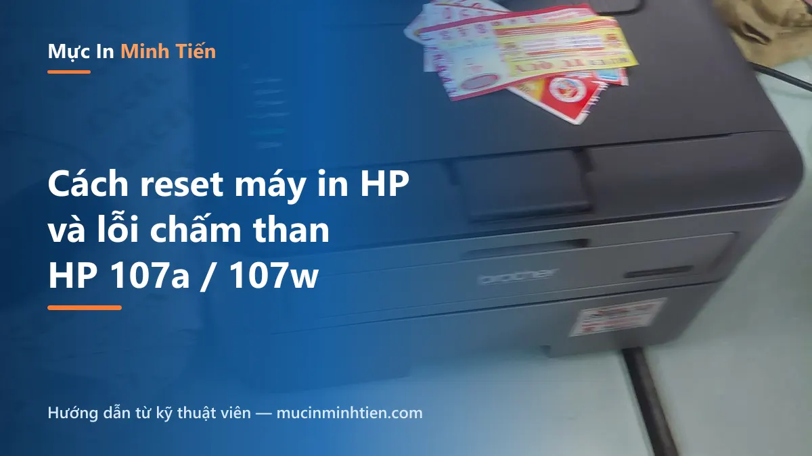
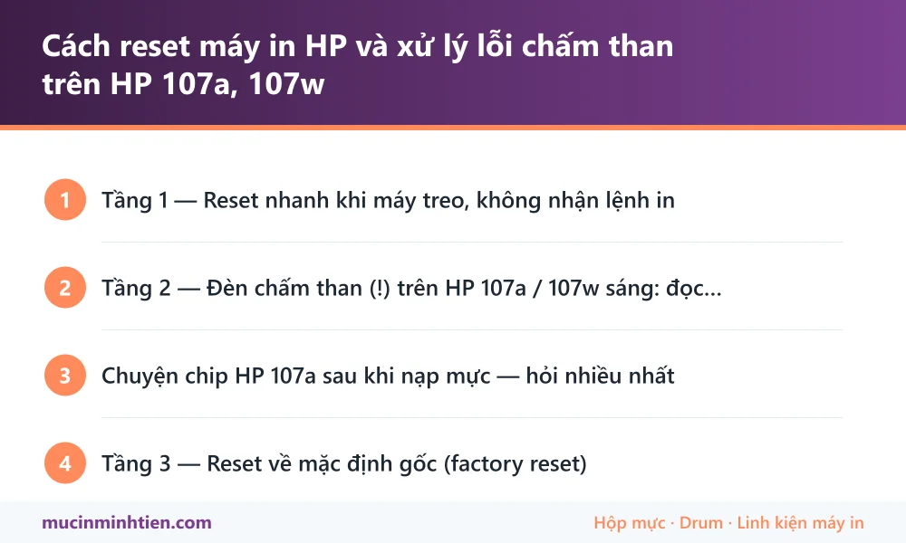

Cách reset máy in HP và xử lý lỗi chấm than trên HP 107a, 107w

"Reset máy in HP" nghe đơn giản nhưng thực ra có 3 tầng khác nhau: reset nhanh khi máy treo lệnh, xử lý lỗi đèn chấm than, và reset về mặc định gốc. Làm đúng tầng — đỡ mất thời gian và không bay mất cấu hình WiFi. Bài này đi từng tầng, kèm riêng phần HP 107a/107w — dòng máy đang bị hỏi nhiều nhất.
Tầng 1 — Reset nhanh khi máy treo, không nhận lệnh in
- Hủy hàng đợi in: Settings → Printers & scanners → chọn máy HP → Open print queue → Cancel all.
- Tắt máy in bằng nút nguồn, rút điện chờ 30 giây (tụ xả hết, xóa bộ nhớ tạm), cắm lại và bật.
- Khởi động lại dịch vụ in của Windows: Windows + R → gõ
services.msc→ tìm Print Spooler → Restart. - In thử — 70% máy "đơ" sống lại sau 3 bước này.
Nếu máy vẫn không nhận lệnh, chuyển qua bài máy in không in được / báo Offline: 7 bước khắc phục để kiểm tra sâu hơn về kết nối và driver.
Tầng 2 — Đèn chấm than (!) trên HP 107a / 107w sáng: đọc đúng bệnh
Đèn chấm than là đèn "Attention" — máy đang cần bạn xử lý một trong các việc sau, kiểm tra theo thứ tự:
- Giấy: hết giấy hoặc kẹt giấy vụn bên trong. Mở nắp, soi kỹ đường giấy — mảnh giấy nhỏ bằng ngón tay cũng đủ giữ đèn sáng.
- Nắp máy: nắp trên chưa sập khít sau khi thay mực — mở ra đóng lại nghe tiếng "click".
- Hộp mực: hộp mực lắp chưa khớp, hoặc chip hộp mực không được nhận (hay gặp nhất sau khi nạp mực — xem phần dưới).
- Lỗi tạm: tắt máy rút điện 30 giây rồi bật lại như Tầng 1.
Chuyện chip HP 107a sau khi nạp mực — hỏi nhiều nhất
Hộp mực W1107A của dòng 107a/107w/MFP 135 có chip đếm số trang. Khi bộ đếm cạn, dù bạn nạp đầy mực máy vẫn báo hết mực / đèn chấm than và từ chối in. Hướng xử lý:
- Thay chip mới cho hộp mực mỗi lần nạp (chi phí thấp, thợ nạp mực làm luôn), hoặc
- Gắn chip vĩnh viễn (chip không đếm trang) — nạp mực các lần sau không phải thay chip nữa.
Tầng 3 — Reset về mặc định gốc (factory reset)
Dùng khi máy lỗi cấu hình WiFi, đổi mạng mới không kết nối được, hoặc cài đặt loạn:
- HP 107w (có WiFi): tắt máy → giữ đồng thời nút WiFi + nút Nguồn khi bật, giữ tới khi các đèn cùng nháy rồi thả — máy về mặc định, cấu hình lại WiFi từ đầu bằng app HP Smart.
- Các dòng có màn hình: Menu → Service/Setup → Restore Defaults.

Với các mã lỗi hiếm gặp không nằm trong bài, tra trực tiếp theo model tại trang hỗ trợ chính thức của HP — nơi có tài liệu mã lỗi và bản driver mới nhất cho từng dòng máy.